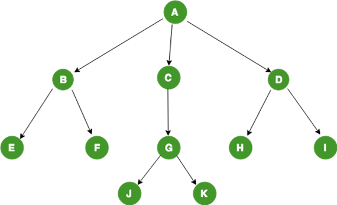

About
I recently graduated as a Computer Science major from University of Washington with a Math minor.
I specialize in conceptual thinking and designing iterative and recursive algorithms with decent knowledge in different
programming languages and frameworks. I have been accepted into the Master's program of UW and intend on getting my Master Degree.
More information in my profile page.
Purpose
Initially, I struggled immensely with Computer Science and have questioned if this was what I wanted to pursue.
The critical thinking involved was difficult to grasp despite my expertise in Math. I want to share my experience and provide some insight on what skills are necessary
to develop. With this insight, I hope not only to encourage others, but also explain how I've grown as a programmer and why I am worthy to work for your company.
Services
The skills I have learned include, but not restricted to:
1. Decent knowledge of a variety of programming languages and frameworks.
2. Knowledge of constructing algorithms through recursion and dynamic programming.
3. The ability to research for specific implementations and learn certain frameworks without guidance.
More information in my resume.
My UW Experience
My experience at University of Washington Tacoma has helped me learn many skills as a programmer. However, in order to learn these skills
and be successful in my field required hours of hardwork, stress, and many intrusive feelings of self-doubt. My first programming class was an Introduction
to programming where we learned Python. I struggled immensely in that class and scored a 3.0 which was the lowest grade I've ever received in a class thus far.
None of what the teacher said made sense. Envisioning for loops was an immensely difficult task, I didn't even remotely understand how to parse through a file, and
even constructing my own functions seemed almost impossible. In all actuality, programming is similar to Math in the sense that you synthesize a problem and
split it into multiple smaller pieces and interpret each piece in a way that is understandable to you (i.e with pseudocode typically) before
attempting to translate each step with code. I didn't understand this at the time and naturally, you may not either, but I found that attempting
to program and continuously practicing difficult problems helped understand programming naturally so that even I managed to ace the final in the end
despite never understanding his instructions.
Initially, my grades in Computer Science were not A's like I had hoped, but after being accepted into the major,
I was able to grasp Computer Science a lot easier and for the most part, aced most of the classes that I had taken.
These are some strategies that were used to facilitate that.
Advice & Strategies

- Collaborate with others. Forming tight-knit groups using various different channels such as Zoom and Discord
is an excellent way to gain additional support and learn from others. This varies across schools, but as long as the work
that is produced is your own, any collaborative work is welcome. Through my experience, I found that collaboration has had a
profound impact on the work that I produced.
- Don't take notes. It's more important to pay attention to the concepts that are taught in class rather than mindlessly
writing everything down. Professors will typically record their lectures, so that crucial explanations can be revisited at your own leisure.
Paying attention to distinct words can help you uncover things that written notes couldn't.
- Break a problem into pieces. Understand what is required for the problem and think about what classes, interfaces, and functions are needed to accomplish the task.
If you need a data structure to return the game state of a board, write a function for it. If you need to update the board, write a function for it.
This way, when you understand what needs to be done, you can simply call that function and focus your time on the next task. This also makes it easier
to focus and not be overwhelmed.
- Learn to be resourceful. Collaboration is crucial, but one of the most important things I learned is that Google is your best friend.
In Computer Security, I was required to complete a variety of esoteric labs found on Seed Labs and the most important thing was not whether
or not I understood Cybersecurity. It's the fact that I was willing to learn and was willing to continue searching through the Web until I found
the information that I needed. This also enabled me to create a web page and connect it to an advanced relational database with the help of a partner
despite having no prior experience which is located on my github.

- Use visuals to help. Creating visual diagrams is very useful for analyzing how a data structure works or discerning a pattern in an algorithm.
- Use inductive reasoning. Learning how to make generalizations by analyzing a sub-problem and applying it to the entire problem as a whole
is very useful in simplifying and envisioning a problem. Don't focus on the entire problem, create a sub-problem that is manageable.
Reference
About Me
I am a recent CS graduate, class of Covid. I've learned a lot during my experience at University of Washington,
but I am currently looking for more opportunities in software development to further my knowledge and skills and
also have a positive impact on society.
Feel free to contact me and search through my other pages if you're interested.